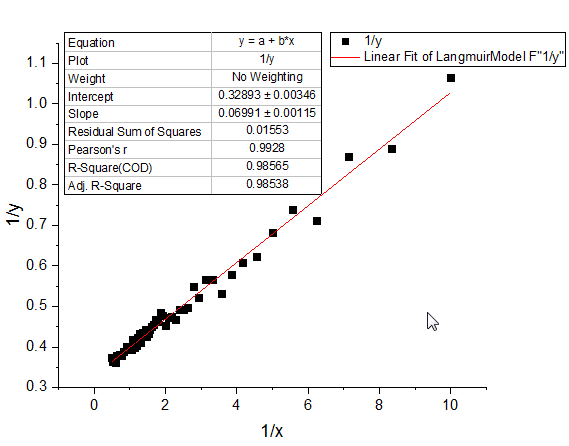
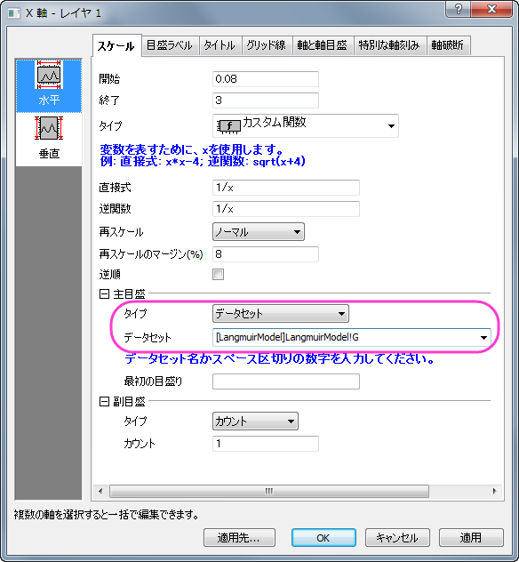
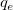
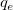

動力学モデルのための線形フィット
Linear-Fit-For-Kinetic-Models
サマリー
非線形動力学モデル（kinetic model）は自然科学、例えば物理、化学、生物など、幅広い分野で使われています。実験的には、動力学モデルの重要なパラメータは素データをフィットすることにより入手されています。素データを直感的にフィットする方法は、動力学方程式（kinetic
equation）から直接数式を導き出して非線形フィットを行うことです。あるいは、従属変数が独立変数に線形の関係で関連を持つように方程式を変換すれば、線形フィットを行うこともできます。
学習する項目
このチュートリアルでは、以下の項目について説明します。
- 同じ非線形動力学モデルを異なる方法で線形に変形し、それぞれ線形フィットを行う
- 非線形動力学モデルに明らかな線形フィットを行う
Langmuir モデルのための線形フィット
変換した独立変数と従属変数を識別する
Langmuirモデルは以下の非線形方程式で説明されます。
ここで、ymとK はフィットを通じて入手したいパラメータです。
Langmuir モデルに線形フィットを行うには、以下の2つの方法のうちどちらかで線形に変換します。
- 伝統的な線形Langmuir 方程式に変換する

ここで、独立変数は y/x、従属変数は y、傾きは -1/K、切片は ymを表します。
- 両辺逆数型線形Langmuir 方程式に変換する

ここで、独立変数は 1/x、従属変数は 1/y、傾きは 1/(ym*K) 、切片は 1/ymを表します。
新しい独立変数と従属変数のデータを作成する
- ワークブックを新しく作成します。
- 単一ASCIIファイルインポート ボタン
 をクリックし、「ASCII」ダイアログボックスを開きます。Samples\Curve
Fitting フォルダに移動し、LangmuirModel.datファイルを開きます。オプションダイアログを表示するにチェックを付けてＯＫを押すことでimpASCダイアログが表示されます。インポートオプションノードのスパークラインの追加でしないを選択してOKをクリックします。
をクリックし、「ASCII」ダイアログボックスを開きます。Samples\Curve
Fitting フォルダに移動し、LangmuirModel.datファイルを開きます。オプションダイアログを表示するにチェックを付けてＯＫを押すことでimpASCダイアログが表示されます。インポートオプションノードのスパークラインの追加でしないを選択してOKをクリックします。
- Ctrl＋Dを押して新規列の追加ダイアログを表示します。テキストボックスに4を入力してOKを押し、4つの列を追加します。これらは後からXY属性に設定します。
- 伝統的な線形Langmuirモデルに変換するには、独立変数はy/xになりますが、従属変数はyのままです。列CとDのロングネームにそれぞれy/x
と y を入力します。これで、グラフの中でX軸とY軸のタイトルにとして表示できます。
- 列CのF(x) 関数セルに「Col(B)/Col(A)」と入力して独立変数y/xを計算して入力するように設定し、Enterキーを押します。列Cを選択し、右クリックして表示されるコンテキストメニューから列XY属性の設定：X列と操作して列Dに対するXになるようにします。
- 列DのF(x) 関数セルに「Col(B)」と入力して従属変数yの値を入力するように設定し、Enterキーを押します。
- 両辺逆数型線形Langmuirモデルに変換するには、独立変数は1/xに、従属変数は1/yになります。先ほどの列CとDのように、列EとFを設定します。ロングネームには1/xと1/yをそれぞれ入力し、F(x)関数セルには1/Col(A)
と1/Col(B)を入力しましょう。列Eの列XY属性の設定はXに変更します。
- ワークシートは下図のようになります。
変換した線形データに線形フィットを行う
- まず、伝統的な線形Langmuir 変換に線形フィットを行います。Highlight column D and
select Plot:Symbol:Scatter to make a scatter plot.
- 作図した散布図に線形フィットを行うには、解析：フィット：線形フィットと操作してダイアログを開きます。線形フィットダイアログで全ての設定はデフォルトのままOKボタンをクリックしてフィットします。表示されるポップアップではいいえを選択してからOKボタンをクリックします。

- 同じように、両辺逆数型線形Langmuir変換でも線形フィットを行います。列Fを選択し、上記1番と2番の手順を繰り返し、散布図を作成してからフィットを行ってください。

Langmuirモデルの係数はそれぞれの傾きと切片の式から計算することが出来ます。
元の非線形データに図上値による線形フィットを行う
あるいは、見かけとして線形に表示しているデータに見かけによる(データの見え方による線形フィットを実行します）。Langmuir動力学的モデルを見ると、両辺逆数型Langmuir線形変換から、元の従属変数の逆数（1/y）と元の独立変数の逆数（1/x）は線形関係にあるといえます。よって、Xのスケールを1/xに設定し、Yのスケールを
1/yに設定すれば、素データの Langmuir 運動データは線形に表示されます。
- 図上値による線形フィットをLangmuir モデルの素データで行うには、列Bを選択し、作図：シンボル図：散布図と操作して非線形の散布図を作図します。
- X軸をダブルクリックして、軸ダイアログを開き、開始に0.08、終了に3を設定します。タイプのドロップダウンリストからカスタム関数を選択し、直接式に1/xを、逆関数に1/xを設定します。再スケールのドロップダウンリストから開始を固定を選択します。OKをクリックしてダイアログを閉じます。
- 作図したプロットから分かるように、デフォルトのX軸の目盛は適切な間隔が開いていません。X 軸の目盛を分かりやすくするため、データセットの目盛りの位置を指定しましょう。LangmuirModel
ワークシートをアクティブにし、Ctrl＋Dで列を追加するダイアログを表示し、1つ列を追加します。新しく追加された列Gに0.1,
0.15, 0.2, 0.3, 0.4, 0.7, 1.3 のデータを入力します。
- 列Gを主目盛の位置として使用するには、X 軸をダブルクリックして軸ダイアログを開きます。スケールタブの主目盛ノードのタイプでデータセットを選択し、表示されるデータセットドロップダウンリストで「[LangmuirModel]LangmuirModel!G
」を選択します。

- 左側パネルで垂直をクリックし、先ほどと同じようにタイプでカスタム関数を選択します。表示される直接式と逆関数には1/x
を入力します。OK をクリックして、ダイアログを閉じます。
- 図上値による線形フィットを実行するには、解析：フィット：線形フィットと操作して線形フィットダイアログを開きます。デフォルトで図上値による線形フィットが選択されていることが分かります。
- OKをクリックしてダイアログを閉じ、ポップアップするダイアログではいいえを選択してからOKをクリックします。
その他の非線形動力学モデルへの提案
Freudlich数式
Freudlichモデルの非線形動力学モデルの式は、以下のようになります。
 = ln(K)+\frac{ln(x)}{n}")
ここで、独立変数はln(x)、従属変数はln(y)、傾きは 1/nで交点はln(K)になります。なお、Kとnは求めるべき係数です。
この場合、自然対数Ln スケールは組み込まれているので、図上値による線形フィットがお勧めです。この非線形動力学モデルをフィットするには、XとY軸のスケールがどちらもLnスケールに設定されている状態で図上値によるフィットを行う必要があります。
あるいは、XとYのデータセットに対してLnの値をけいさんしてから線形フィットを行うことが出来ます。詳細はLangmuir モデルを確認してください。
Lagergrenの擬一次式
Lagergrenの擬一次式モデルの非線形動力学モデルの式は、以下のようになります。
 = \frac{log(q_{e,fit})-k_1*x}{2.303}")
ここで、独立変数はx、従属変数は、傾きは、切片は/2.303") となります。 は既知の定数で、
となります。 は既知の定数で、 と
と  は求められる係数です。
は求められる係数です。
この場合、Log スケールは組み込まれているので、図上値による線形フィットがお勧めです。この非線形な動力学モデルをフィットするには、 を計算してからY軸だけをLogスケールに設定して図上値にフィットを使用してフィットします。
を計算してからY軸だけをLogスケールに設定して図上値にフィットを使用してフィットします。
あるいは、まずを計算し、作成したこのデータを使って直接線形フィットを行います。詳細はLangmuir
モデルを確認してください。
Hoの擬二次式
Freudlichモデルの非線形動力学モデルの式は、以下のようになります。

ここで、独立変数はx、従属変数は x/y、傾きは 、切片はとなります。
、切片はとなります。
 は既知の定数で、 と
は求められる係数です。
は既知の定数で、 と
は求められる係数です。
このモデルをフィットするには、まずx/yを計算し、そのデータを使用して線形フィットを行ってください。
あるいは、この計算式を以下のような形に変形させます。

ここで、独立変数は 1/x、従属変数は 1/y、傾きは 、切片は を表します。
この変換をしてから新しい独立変数を1/xとして設定し、従属ライセンスを1/yとして設定してから線形フィットを行う方法と、図上値による線形フィットをXとY軸のスケールを1/x
に設定して行います。詳細は、Langmuir モデルを参照して下さい。